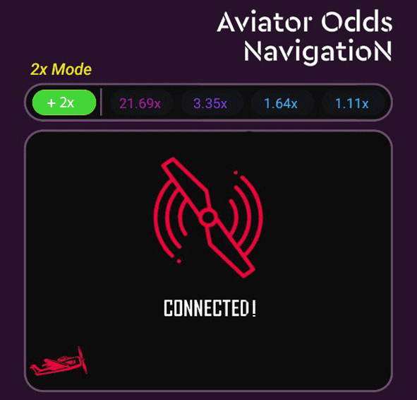
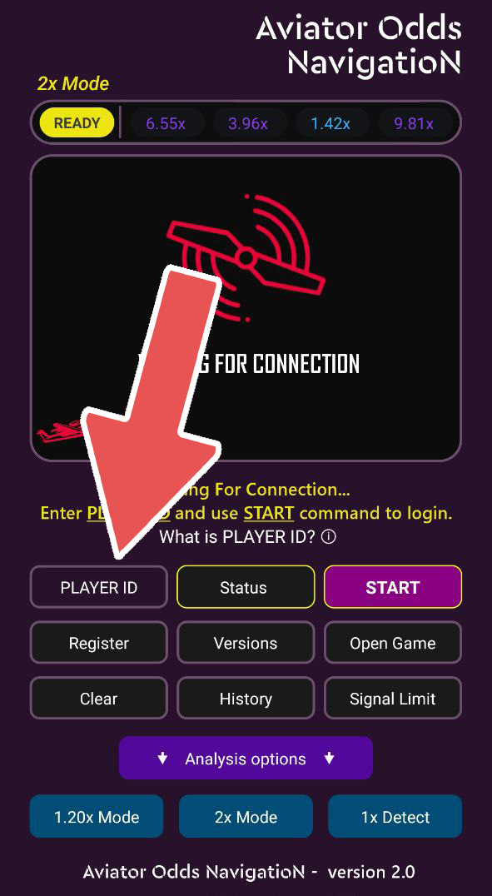
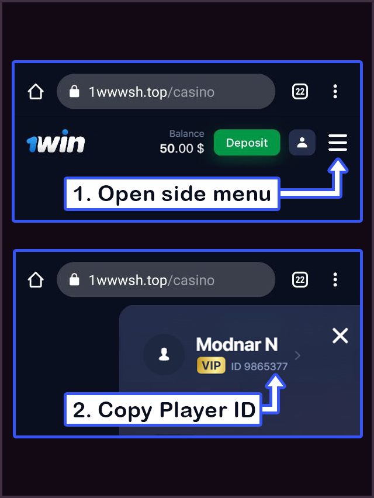
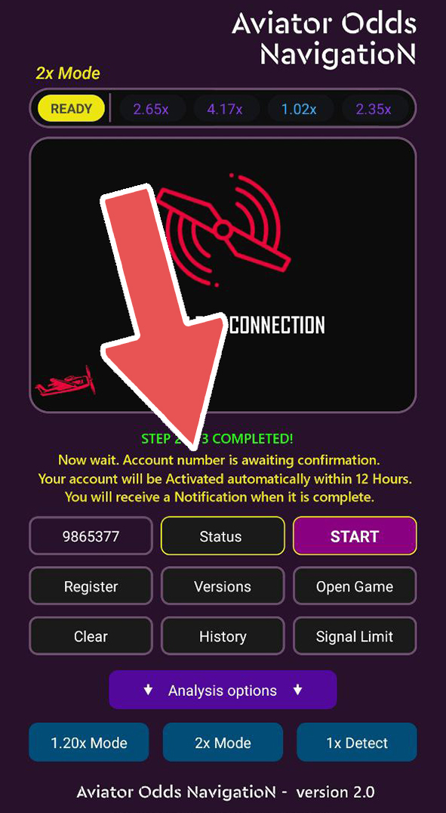

Aviator Odds Navigation
Aviator Odds Navigation realiza uma análise ao vivo no jogo Aviator. Este aplicativo usa dados históricos de probabilidades e aprendizado de máquina para decodificar o algoritmo de geração de probabilidades no jogo Aviator.
Descrição
Aviator Odds Navigation é um hack gratuito para o jogo "Aviator". Ele realiza uma análise ao vivo no jogo "Aviator". Este aplicativo usa valores históricos de probabilidades e aprendizado de máquina para decodificar o algoritmo de geração de probabilidades no jogo "Aviator". O hack para "Aviator" analisa as probabilidades anteriores para prever se uma nova probabilidade será maior do que duas vezes a anterior, usando dados dos últimos meses. Por favor, note que o uso deste hack não garante vitória todas as vezes. Para instalar o aplicativo "Aviator", siga estas etapas. Aviso: "Aviator Predictor" é um aplicativo que muitas pessoas tentam vender. Na verdade, é uma fraude. Não há nenhum aplicativo chamado "Aviator Predictor". É apenas um vídeo editado para enganar as pessoas. Aviator Odds Navigation é gratuito e funciona usando aprendizado de máquina para analisar as probabilidades antigas. (imagem 0)
imagem (0)
princípio de trabalho
Instalação
Em primeiro lugar, para instalar o apk Aviator Odds Navigation, você precisará de um dispositivo com sistema operacional Android. Para baixar o apk Aviator Odds Navigation, você pode usar este link. Depois de abrir o Aviator hack, você verá a tela abaixo (imagem 1). Para verificar se o seu hack está atualizado, você pode pressionar o botão "versões". Certifique-se de usar a versão mais recente.
imagem (1)

O que é Player ID? (imagem 2)
imagem (2)
Player ID é o número da conta de jogador do jogo. O hack Aviator funciona neste servidor: https://1wwwsh.top/ . Para criar um Player ID, registre-se nesta página. Após o registro, você pode verificar seu Player ID nesta tela (imagem 3). Copie o Player ID. (imagem 3)
imagem (3)
Abra o hack Aviator. Cole o Player ID copiado aqui. Em seguida, clique no botão "iniciar" (imagem 4).
imagem (4)

Sua conta será automaticamente verificada pelo sistema em até 12 horas. Às vezes, as contas não podem ser verificadas. Se você receber uma mensagem de erro, tente se registrar em outro navegador: https://1wwwsh.top/ e obter um novo Player ID. Alguns usuários foram verificados na segunda tentativa (imagem 5).
imagem (5)
Download Aviator Odds Navigation apk
Link para baixar o apk Aviator hack
Eu serei bloqueado se usar o cheat Aviator?
Resposta: não.
O hack do Aviator funciona com a segurança "Ghost BASE PRO". Com a segurança Ghost BASE PRO, o hack é indetectável.